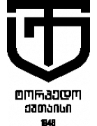

🏆 EURO 2024
| Date | Fixture |
Odds |
Win |
Result |
Over ⚽ = over 0.5 ⚽⚽ = over 1.5 ⚽⚽⚽ = over 2.5 ... ► |
Alerts Home 🏥 = Considerable injuries 🏥🏥 = Major injuries 📉 = Dip in form Note, you may see injuries when expanding match but no alert here, meaning the model does not consider them important. |
Alerts Away 🏥 = Considerable injuries 🏥🏥 = Major injuries 📉 = Dip in form Note, you may see injuries when expanding match but no alert here, meaning the model does not consider them important. |
|---|
🏆 Copa América 2024
| Date | Fixture |
Odds |
Win |
Result |
Over ⚽ = over 0.5 ⚽⚽ = over 1.5 ⚽⚽⚽ = over 2.5 ... ► |
Alerts Home 🏥 = Considerable injuries 🏥🏥 = Major injuries 📉 = Dip in form Note, you may see injuries when expanding match but no alert here, meaning the model does not consider them important. |
Alerts Away 🏥 = Considerable injuries 🏥🏥 = Major injuries 📉 = Dip in form Note, you may see injuries when expanding match but no alert here, meaning the model does not consider them important. |
|
|---|---|---|---|---|---|---|---|---|
| Wed. 03 Jul. | Brazil 02:00 Colombia Form: WDDW Form: WWWW |
0.88 vs -1.4 | 1.89 | 65% | None | ⚽ 1.08 |
📉 Home team has a dip in form recently | |
| Wed. 03 Jul. | Costa Rica 02:00 Paraguay Form: WWDL Form: LWLL |
-0.5 vs -1.03 | 0% | None | 😴 0.46 |
🏥🏥 📉 Home team has MAJOR injuries and a dip in form recently | 🏥 📉 Away team has considerable injuries and a dip in form recently |
🌍 Global
| Date | Fixture |
Odds |
Win |
Result |
Over ⚽ = over 0.5 ⚽⚽ = over 1.5 ⚽⚽⚽ = over 2.5 ... ► |
Alerts Home 🏥 = Considerable injuries 🏥🏥 = Major injuries 📉 = Dip in form Note, you may see injuries when expanding match but no alert here, meaning the model does not consider them important. |
Alerts Away 🏥 = Considerable injuries 🏥🏥 = Major injuries 📉 = Dip in form Note, you may see injuries when expanding match but no alert here, meaning the model does not consider them important. |
|
|---|---|---|---|---|---|---|---|---|
| Wed. 03 Jul. | Auckland City FC 08:30 Manurewa AFC Form: WWDW Form: WDLW |
1.44 vs -2.01 | 74% | None | ⚽⚽ 2.21 |
📉 Away team has a dip in form recently | ||
| Wed. 03 Jul. | Víkingur Reykjavík 20:15 Fylkir Reykjavík Form: LWDL Form: WWWL |
1.29 vs -1.94 | 73% | None | ⚽⚽⚽ 3.52 |
📉 Home team has a dip in form recently | 📉 Away team has a dip in form recently | |
| Wed. 03 Jul. | FK Aktobe II 13:00 Kaspiy Aktau Form: LLLL Form: LDLW |
-1.83 vs 1.08 | 71% | None | ⚽⚽ 2.35 |
📉 Home team has a dip in form recently | 📉 Away team has a dip in form recently | |
| Wed. 03 Jul. | Brazil 02:00 Colombia Form: WDDW Form: WWWW |
0.88 vs -1.4 | 1.89 | 65% | None | ⚽ 1.08 |
📉 Home team has a dip in form recently | |
| Wed. 03 Jul. | Yokohama F. Marinos 11:00 Sagan Tosu Form: LWWL Form: WLWL |
0.71 vs -1.65 | 1.63 | 58% | None | ⚽⚽ 2.93 |
📉 Home team has a dip in form recently | 📉 Away team has a dip in form recently |
| Wed. 03 Jul. | Kalju FC 16:00 Pärnu JK Vaprus Form: WDLD Form: DDLL |
0.51 vs -1.34 | 50% | None | ⚽⚽ 2.01 |
📉 Home team has a dip in form recently | 📉 Away team has a dip in form recently | |
| Wed. 03 Jul. | FC Inter Turku 16:00 Turun Palloseura Form: LWDW Form: WWDL |
0.5 vs -1.02 | 50% | None | ⚽⚽ 2.4 |
📉 Away team has a dip in form recently | ||
| Wed. 03 Jul. | Guayaquil City FC 01:00 Chacaritas FC Form: DDLW Form: WDLL |
0.42 vs -1.14 | 44% | None | 😴 0.66 |
📉 Home team has a dip in form recently | 📉 Away team has a dip in form recently | |
| Wed. 03 Jul. | Gualaceo SC 21:00 San Antonio FC Form: WWLW Form: DLLD |
0.34 vs -1.23 | 37% | None | 😴 0.74 |
📉 Home team has a dip in form recently | 📉 Away team has a dip in form recently | |
| Wed. 03 Jul. | Skála IF 18:30 B68 Toftir Form: LWLL Form: DLLD |
0.3 vs -1.23 | 34% | None | ⚽⚽ 2.77 |
📉 Home team has a dip in form recently | 📉 Away team has a dip in form recently | |
| Wed. 03 Jul. | B36 Tórshavn II 15:00 B71 Sandoy Form: DDWW Form: DDLL |
0.25 vs -0.92 | 30% | None | ⚽⚽ 2.66 |
📉 Away team has a dip in form recently | ||
| Wed. 03 Jul. | Mash'al Mubarek 13:00 FC Qizilqum Form: DWLW Form: DLDD |
-0.93 vs 0.22 | 28% | None | ⚽ 1.61 |
📉 Home team has a dip in form recently | 📉 Away team has a dip in form recently | |
| Wed. 03 Jul. | Dinamo Tbilisi 17:00  Torpedo Kutaisi Form: LLDW Form: WWWW |
0.16 vs -0.71 | 23% | None | ⚽⚽ 2.68 |
📉 Home team has a dip in form recently | ||
| Wed. 03 Jul. | Kalev Tallinn 18:00 FC Kuressaare Form: DLLL Form: LDLD |
0.05 vs -0.96 | 14% | None | ⚽⚽ 2.71 |
📉 Home team has a dip in form recently | 📉 Away team has a dip in form recently | |
| Wed. 03 Jul. | Estudiantes de Mérida 21:00 Inter de Barinas Form: DLLL Form: WDWL |
0.02 vs -0.66 | 12% | None | 😴 0.9 |
📉 Home team has a dip in form recently | 📉 Away team has a dip in form recently | |
| Wed. 03 Jul. | SJK Seinäjoki 17:00 AC Oulu Form: WDWW Form: DWDW |
-0.02 vs -0.69 | 10% | None | ⚽⚽⚽ 3.31 |
|||
| Wed. 03 Jul. | Club Leones del Norte 21:00 Cuniburo FC Form: DWWL Form: LWLL |
-0.76 vs -0.03 | 9% | None | ⚽ 1.92 |
📉 Home team has a dip in form recently | 📉 Away team has a dip in form recently | |
| Wed. 03 Jul. | Akzhayik Uralsk 14:00 Kairat-Zhas Form: LDDL Form: WWLW |
-0.04 vs -0.63 | 9% | None | ⚽⚽ 2.68 |
📉 Home team has a dip in form recently | 📉 Away team has a dip in form recently | |
| Wed. 03 Jul. | Sandefjord Fotball postponed Tromsø IL Form: LLDD Form: WDWL |
-0.45 vs -0.08 | 2.86 | 8% | None | ⚽⚽ 2.62 |
📉 Home team has a dip in form recently | 📉 Away team has a dip in form recently |
| Wed. 03 Jul. | FK Tukums 2000 16:00 BFC Daugavpils Form: LLLW Form: LLDW |
-0.09 vs -0.62 | 8% | None | ⚽ 1.71 |
📉 Home team has a dip in form recently | 📉 Away team has a dip in form recently | |
| Wed. 03 Jul. | CSD Vargas Torres 21:00 Independiente Juniors Form: DWLD Form: WLWL |
-0.53 vs -0.11 | 8% | None | 😴 0.92 |
📉 Home team has a dip in form recently | 📉 Away team has a dip in form recently | |
| Wed. 03 Jul. | Grêmio Novorizontino 00:00 Mirassol Futebol Clube (SP) Form: DWLD Form: WWLL |
-0.11 vs -0.68 | 2.46 | 8% | None | ⚽ 1.19 |
📉 Home team has a dip in form recently | 📉 Away team has a dip in form recently |
| Wed. 03 Jul. | Ekenäs IF 16:30 Kuopion Palloseura Form: LWLW Form: LWLW |
-0.38 vs -0.15 | 7% | None | ⚽⚽⚽ 3.16 |
📉 Home team has a dip in form recently | 📉 Away team has a dip in form recently | |
| Wed. 03 Jul. | Carabobo FC 21:00 Academia Puerto Cabello Form: WLDL Form: DLDW |
-0.16 vs -0.65 | 7% | None | 😴 0.79 |
📉 Home team has a dip in form recently | 📉 Away team has a dip in form recently | |
| Wed. 03 Jul. | Iberia 1999 Tbilisi 17:00 Dinamo Batumi Form: WLLL Form: LLWL |
-0.17 vs -0.31 | 7% | None | ⚽⚽ 2.49 |
📉 Home team has a dip in form recently | 📉 Away team has a dip in form recently | |
| Wed. 03 Jul. | Olimpik-Mobiuz Tashkent 13:00 Xorazm Urganch Form: DLLW Form: LDWD |
-0.23 vs -0.39 | 5% | None | ⚽ 1.53 |
📉 Home team has a dip in form recently | 📉 Away team has a dip in form recently | |
| Wed. 03 Jul. | Loudoun United FC 00:30 Hartford Athletic Form: LLDD Form: DLWL |
-0.44 vs -0.47 | 1% | None | ⚽ 1.99 |
📉 Home team has a dip in form recently | 📉 Away team has a dip in form recently | |
| Wed. 03 Jul. | Costa Rica 02:00 Paraguay Form: WWDL Form: LWLL |
-0.5 vs -1.03 | 0% | None | 😴 0.46 |
🏥🏥 📉 Home team has MAJOR injuries and a dip in form recently | 🏥 📉 Away team has considerable injuries and a dip in form recently |
Last updated 16:36:59 2024-07-01
Privacy Policy - 18+. Gamble Responsibly. - Terms